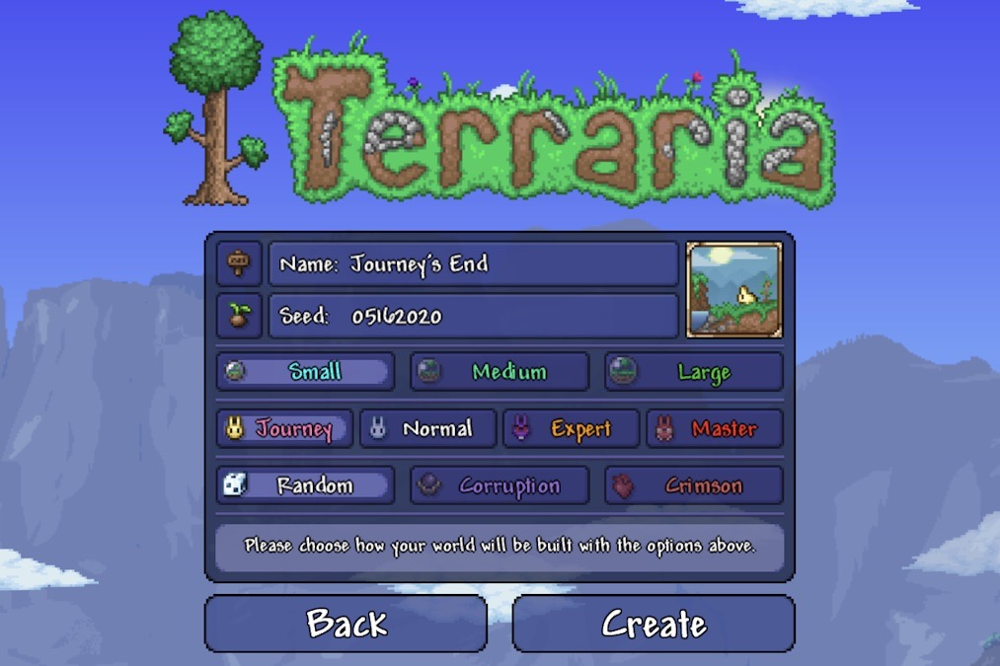

Hey guys,
We are extremely excited to announce that we will be releasing Journey's End on the 9th anniversary of Terraria- May 16, 2020!

We hope you enjoy this latest reveal... see you in a month, Terrarians.
Last updated on: 2020/4/14 上午12:05:35